Отдельные профили
У каждой сборки своя папка: моды, ресурспаки, шейдеры, миры и логи не пересекаются. Память и Java — тоже на профиль.
1.2.6 Windows 10/11 · бесплатно · MIT
Kubik Launcher проверяет файлы игры один раз, кэширует Java и больше не пересчитывает хеши при каждом нажатии «Играть». Отдельные профили, Fabric, Forge, NeoForge и Quilt, каталог Modrinth, аккаунты Ely.by и пиксельный редактор скинов с 3D-просмотром.
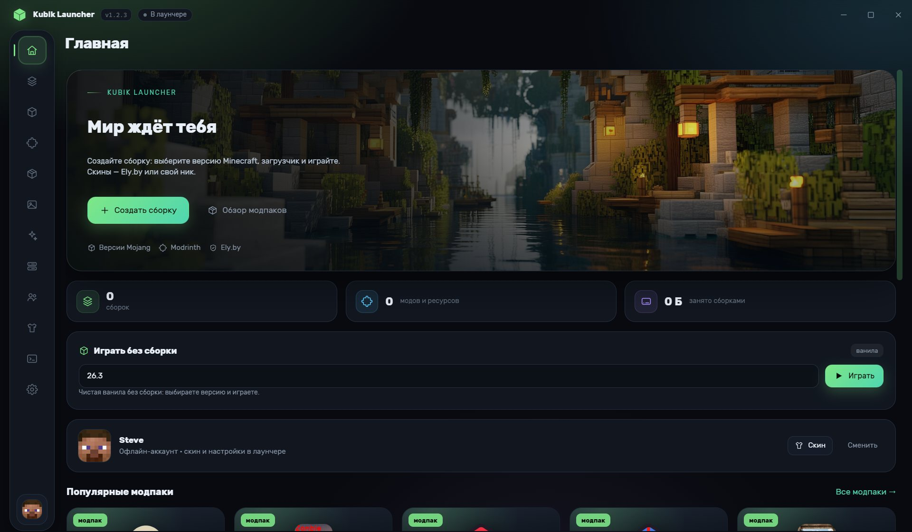
Возможности
Лаунчер закрывает повседневные задачи: поставить версию, собрать моды, зайти в игру и поменять скин. Без лишних окон и установки сторонних утилит.
У каждой сборки своя папка: моды, ресурспаки, шейдеры, миры и логи не пересекаются. Память и Java — тоже на профиль.
Каталог Mojang с поиском и фильтрами, установка библиотек и ресурсов с проверкой SHA1. Fabric, Quilt, Forge и NeoForge.
Пиксельный редактор 64×64 с палитрой и своим HEX-цветом, каталог скинов с автоподгрузкой и 3D-модель с вращением.
Поиск модов, ресурспаков, шейдеров и модпаков с фильтрами по версии игры и загрузчику, автоустановка зависимостей.
Вход с поддержкой 2FA, хранение токенов, автопродление сессии и authlib-injector — скин виден в игре и на серверах Ely.by.
Список друзей и общие сборки, все запуски пишутся в логи, а после вылета лаунчер показывает разбор причины.
Скорость
Раньше лаунчер при каждом запуске пересчитывал SHA1 у тысяч файлов и ходил в сеть за списком Java. Теперь проверка делается один раз, а её результат запоминается.
Три вещи, которые забирали почти всё время перед стартом игры.
ПОДГОТОВКА К ЗАПУСКУ, ЗАМЕРЫ
Замеры на сборке Fabric 1.21.10: 94 библиотеки и 4405 ресурсов. Полная проверка теперь запускается только вручную — при первом запуске и по кнопке проверки файлов.
Интерфейс
Тёмная и светлая тема, акцентный цвет меняется в настройках.
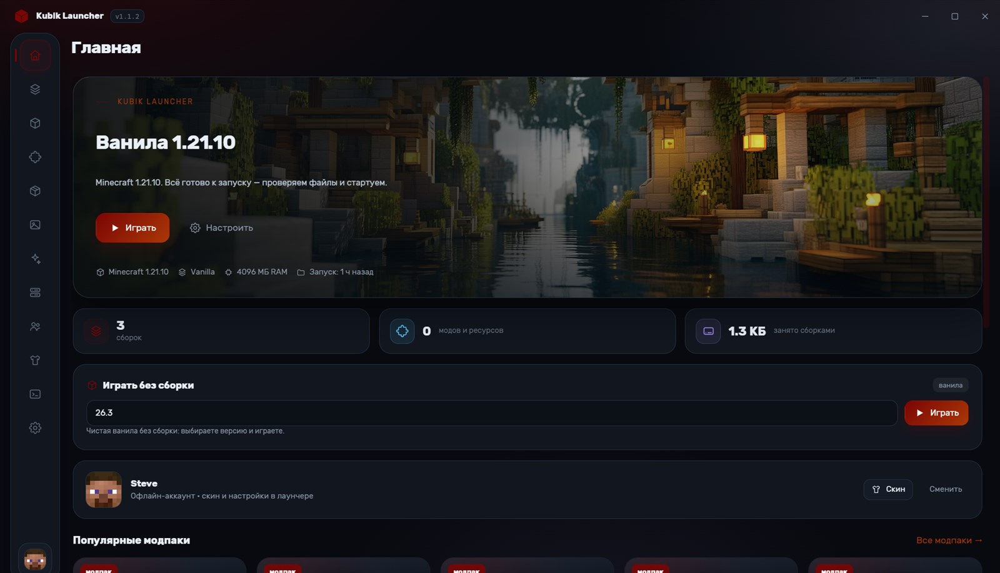
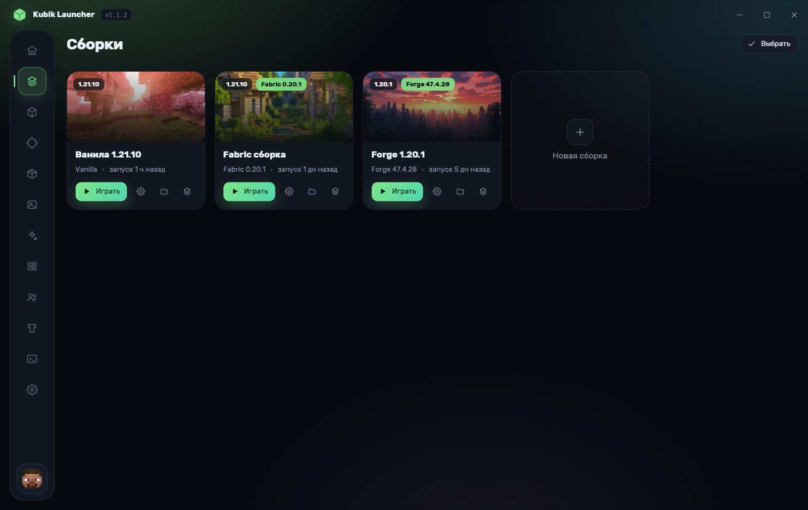
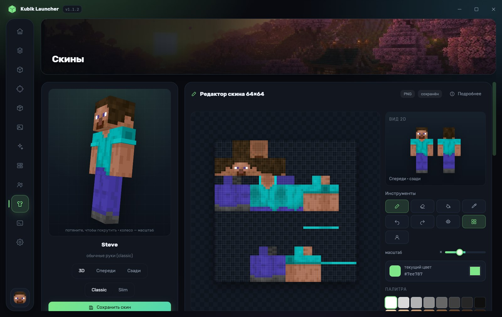
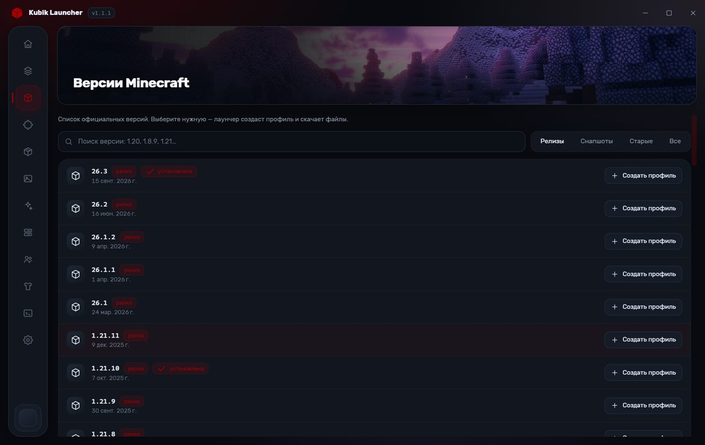
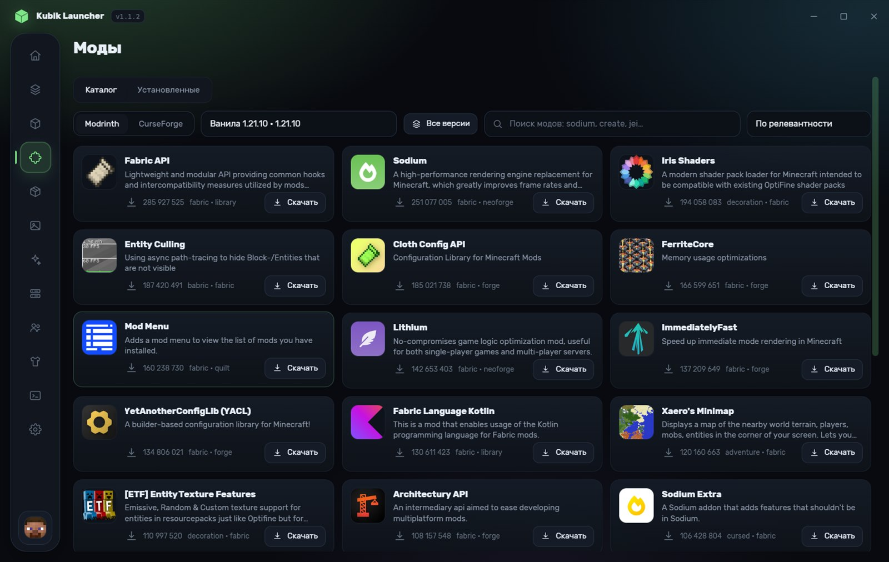
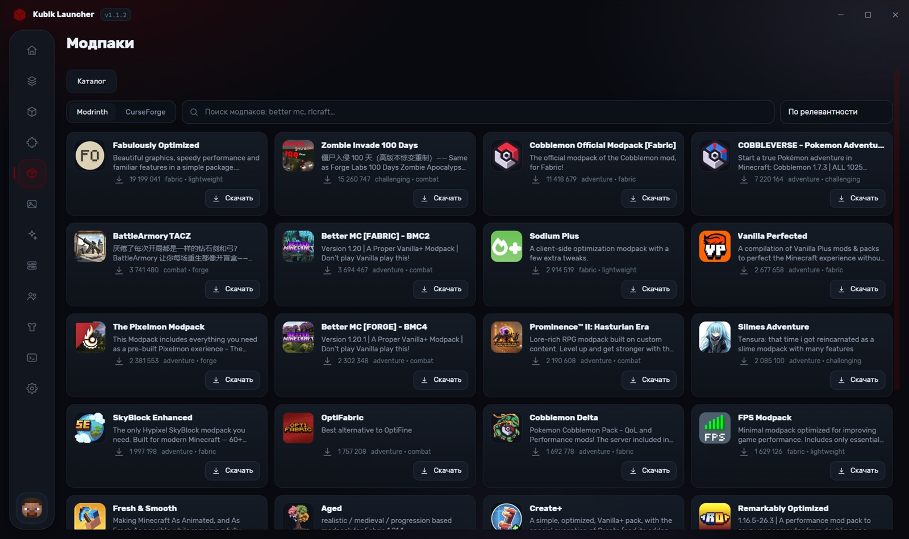
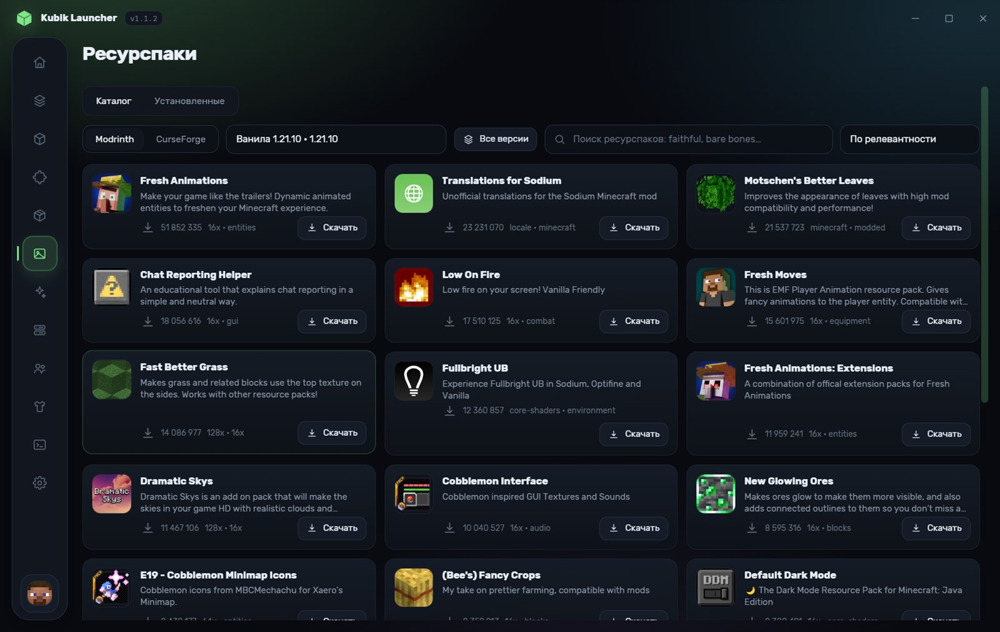
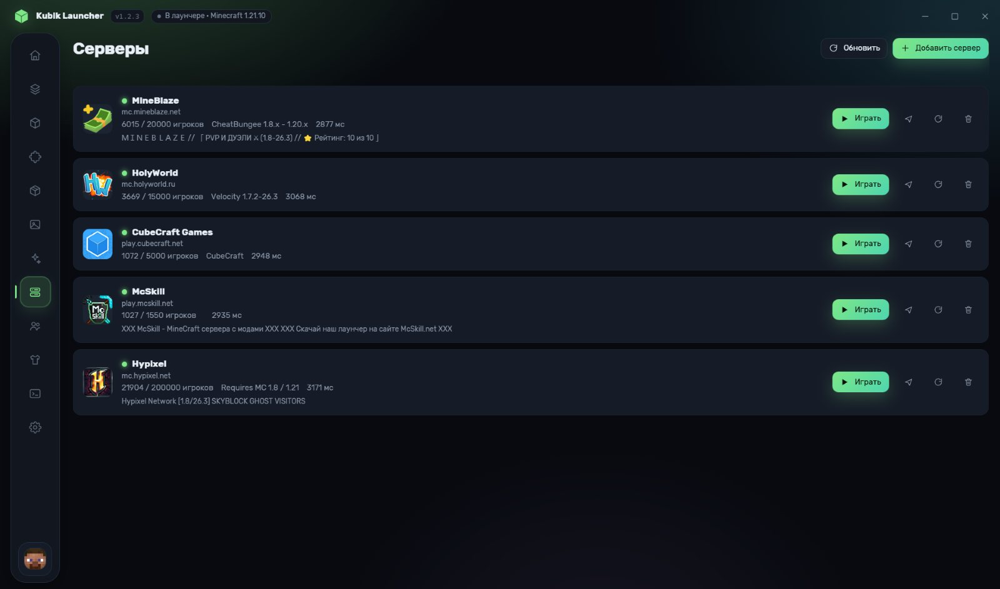
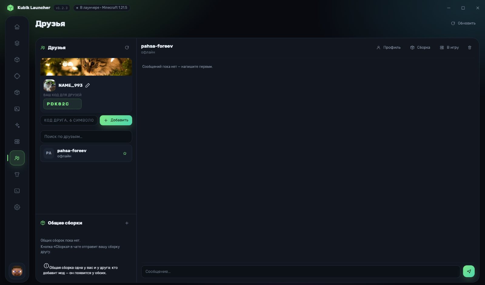
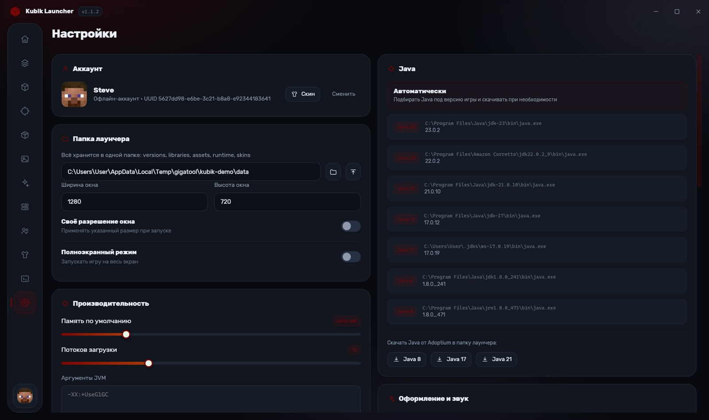
Установка
Три шага. Портативная версия работает без установки — распакуйте архив и запустите exe.
Последний релиз на GitHub. Файл — KubikLauncher-Setup.exe.
Офлайн-ник, аккаунт Ely.by или Microsoft. Для офлайн-профиля достаточно придумать имя.
Выберите версию и загрузчик, нажмите «Играть» — лаунчер сам скачает библиотеки и ресурсы.
certutil -hashfile KubikLauncher-Setup-1.2.6.exe SHA256.
Установщик проверен в
VirusTotal
(версия 1.1.9).
Подпись кода предоставляется
SignPath Foundation.
Что нового
.mrpack и CurseForge .zip — версия игры и загрузчик берутся из манифеста.Вопросы
Лаунчер не пересчитывает SHA1 у всех файлов при каждом запуске. После первой установки он запоминает отпечаток версии и ресурсов, а путь к подходящей Java и authlib-injector сохраняет в настройках. Полную проверку можно запустить вручную — кнопкой проверки файлов.
Не обязательно. Лаунчер находит установленные Java 8/17/21/23 и при необходимости скачивает подходящую JRE от Adoptium в свою папку.
Данные лежат в %APPDATA%\.KubikLauncher: профили, библиотеки, ресурсы, Java, логи. Папку можно сменить в настройках.
Да. Есть офлайн-профиль по имени и вход через Ely.by — он подходит для серверов Ely.by и одиночной игры.
Кнопкой проверки обновлений в настройках: лаунчер скачает новую версию с GitHub Releases и установит её сам. При запуске он тоже предлагает обновиться, если вышла новая версия.
Нет. Kubik Launcher не связан с Mojang Studios и Microsoft. Игра и файлы скачиваются с официальных серверов, сам клиент не распространяется.
Пока только Windows 10/11 x64.
Обратная связь
Репорты принимаем в GitHub Issues: там видно версию, лог и когда ошибку исправят.
logs: ссылка «Логи и конфиг» в том же окне.